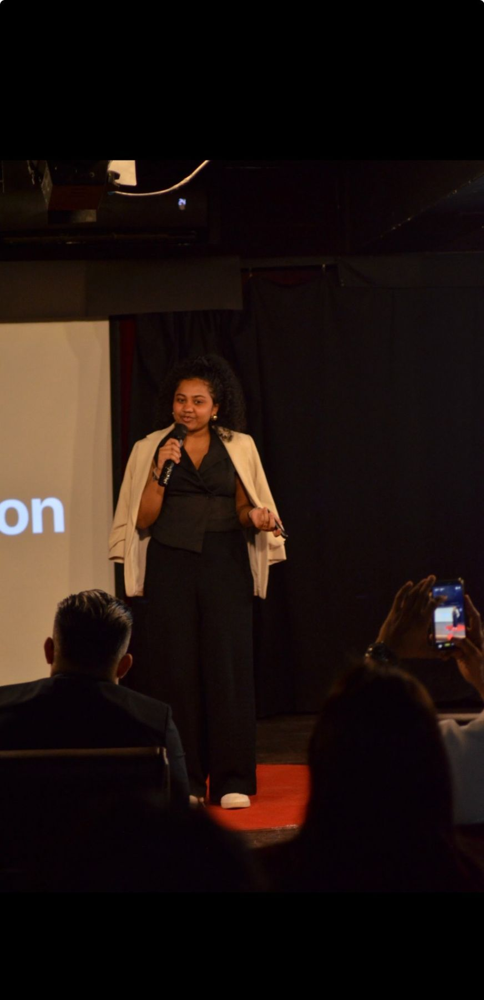
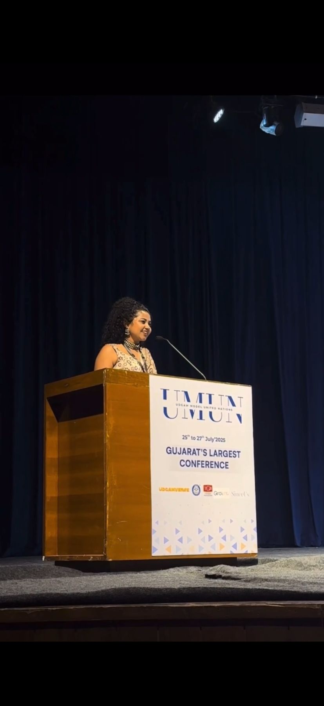
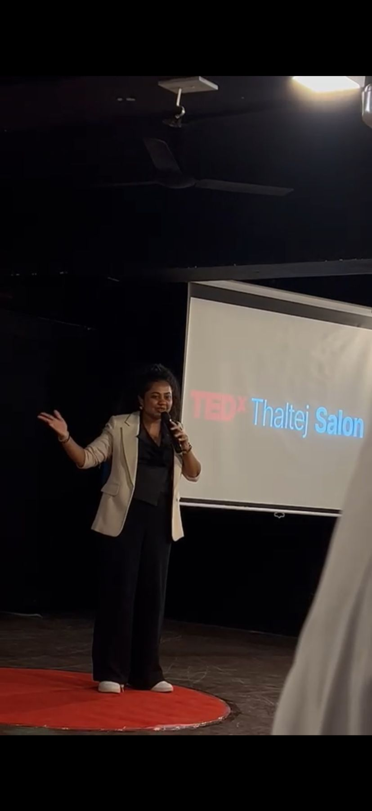
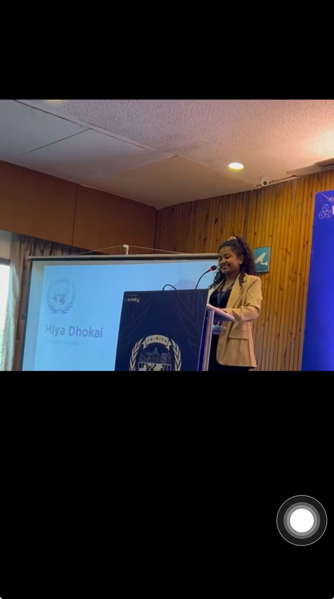
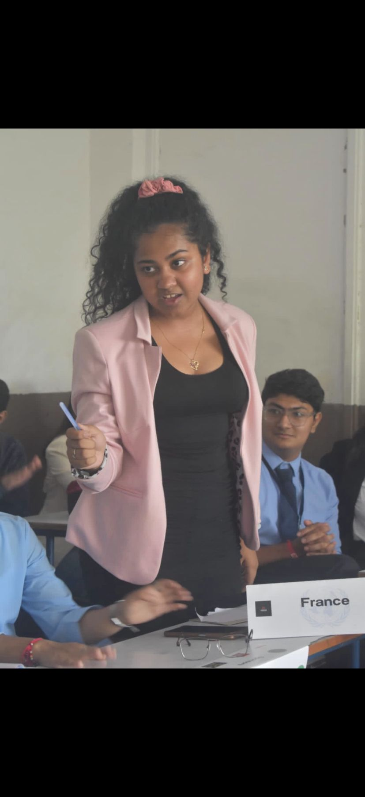
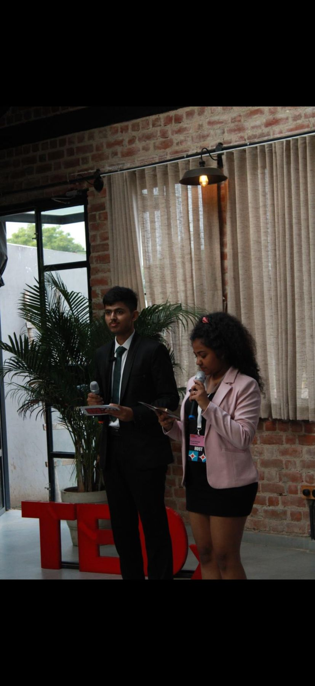
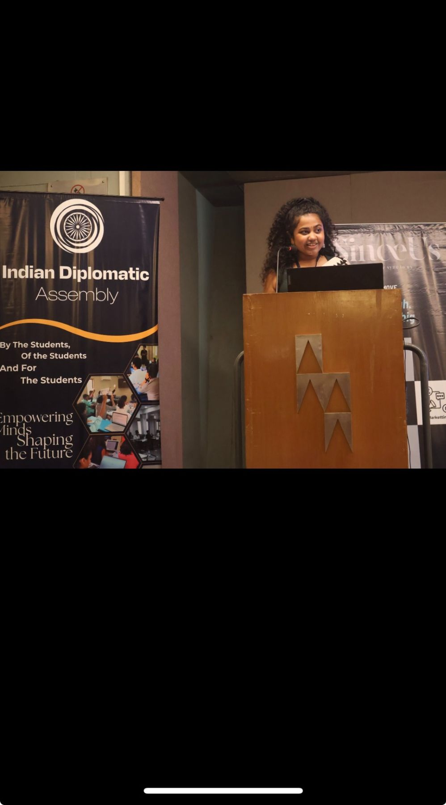
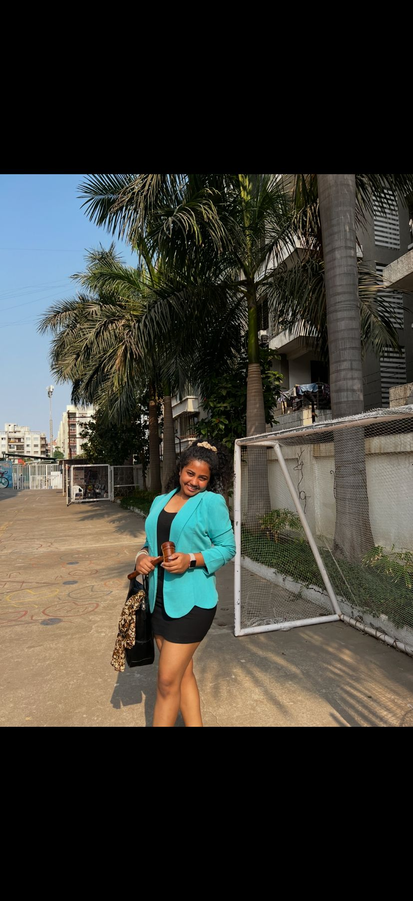
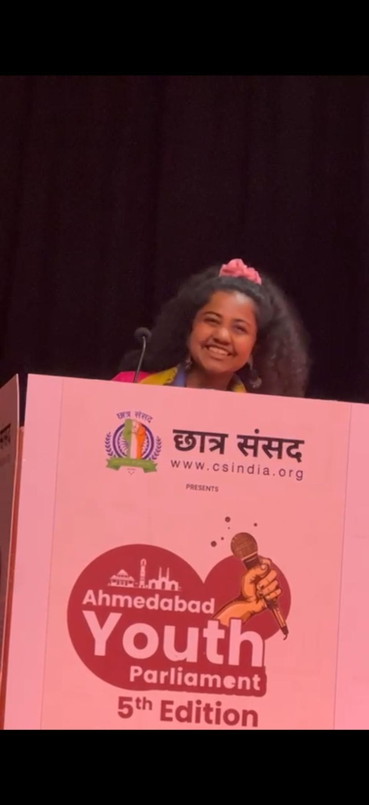

Chhatra Sansad
General Secretary
Leadership, representation and learning how to bring people together around a shared agenda.
because one chapter was never going to be enough.
A little leadership, a little community work, a few creative experiments, and quite a lot of time spent holding a microphone.
SinceUs is a big part of my story, but it isn't the whole thing. These are the rooms, teams and projects that have taught me to lead, communicate, build with people and keep saying yes to things that scare me a little.
different hats. same curiosity.



THE BIG RED DOT (AND OTHER STAGES)
a chapter that deserves its own spotlight.
From anchoring TEDx events to speaking at TEDxThaltej Salon, I've had the chance to be part of spaces built around ideas and the people brave enough to share them.
There's something special about helping a room listen, think and see a familiar subject differently. It's a skill I'm still learning every time I step on stage.
TEDxThaltej Salon · SpeakerTEDx · Anchoring
the stage is never just a stageGeneral Secretary
Leadership, representation and learning how to bring people together around a shared agenda.
Core Volunteer
Working on community-focused initiatives and experiences where participation and inclusion matter.
Co-founder & CMO
A chance to build a brand, shape its voice and think about how an idea meets its audience.
Secretary General
Building from the early days, taking ownership and helping a team find its rhythm.

and then there was the day-to-day.
At The Simply Salads, I worked as a Social Media Assistant. At The Emmisary, I worked as a Communications Coordinator. Both gave me a closer look at how brands communicate, how teams work and how much thought goes into the details people often don't see.




STILL COLLECTING CHAPTERS
I'm still figuring things out, trying new roles and finding new ways to contribute. That's kind of the point.
FOLLOW ALONG ON INSTAGRAM ↗to be continued...